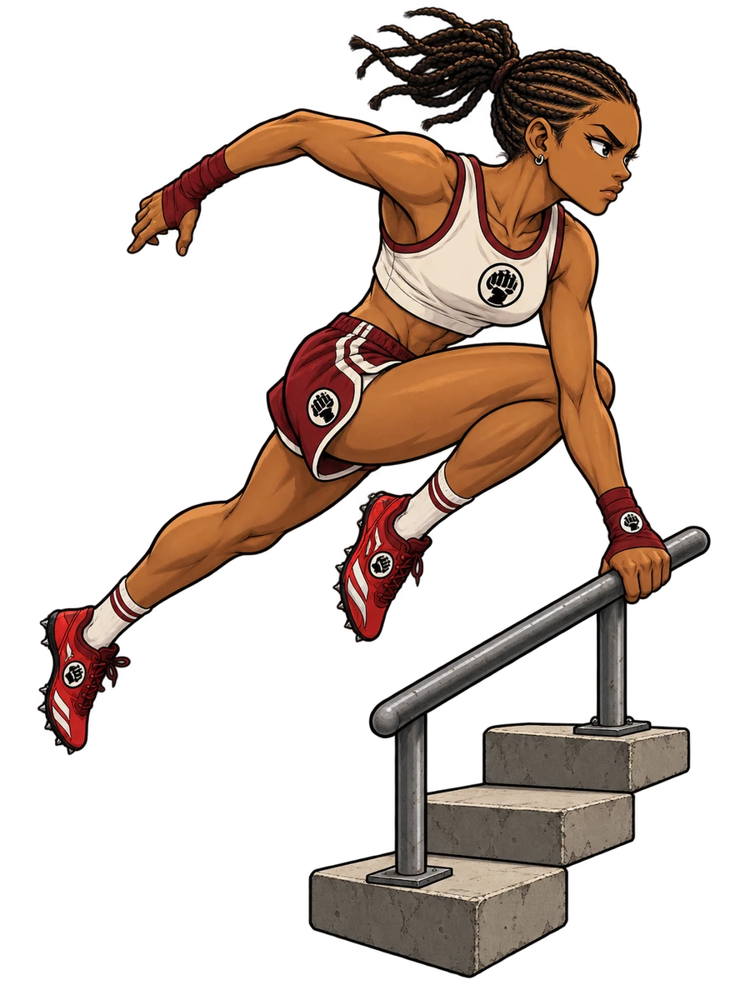
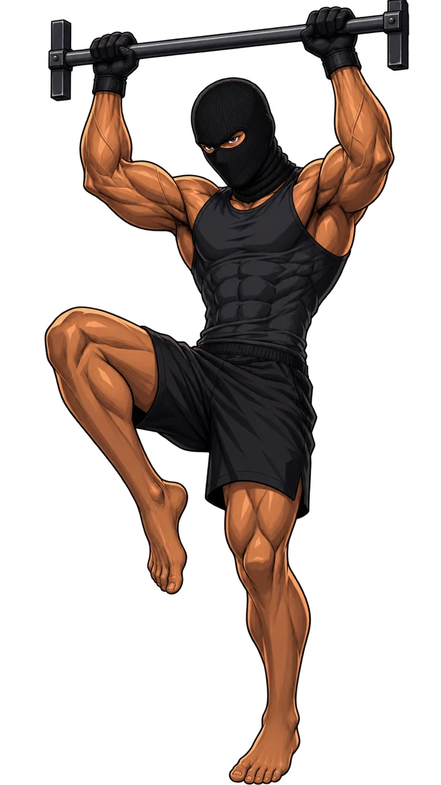
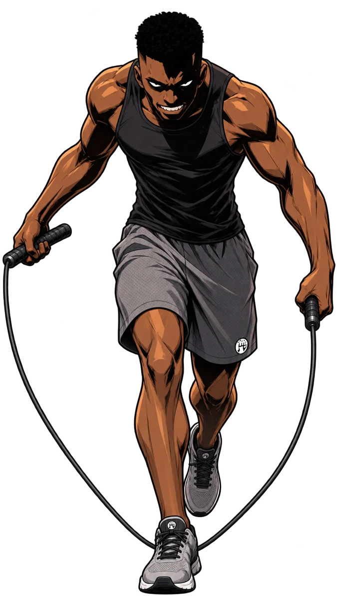
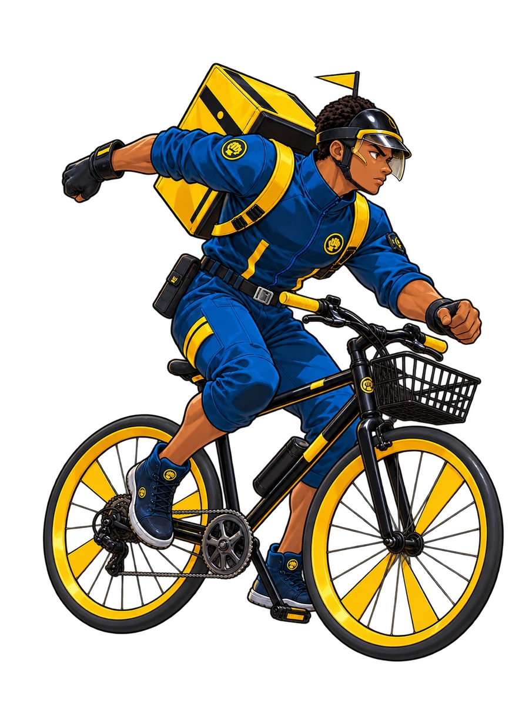
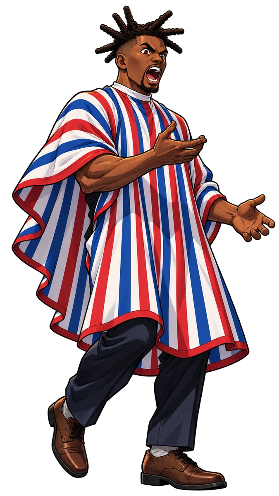
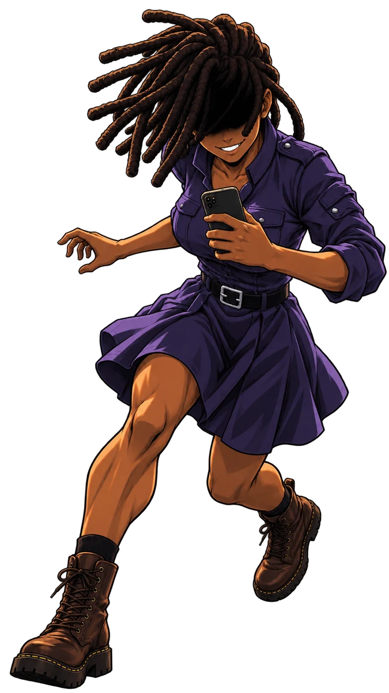
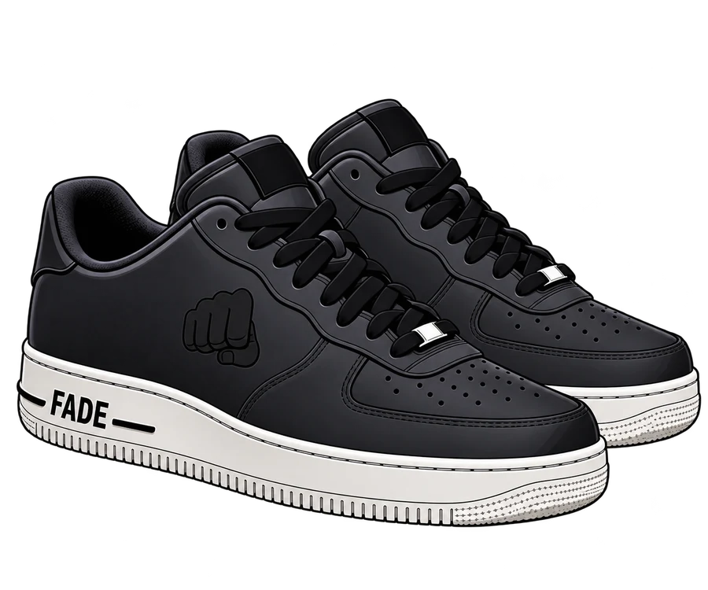

Track Suit Auntie
1 MOTION / 1 HANDS · Normal
First Lap
On Reveal: Move to your weakest legal other district.
On Reveal: Move to your weakest legal other district.
31 collectibles + Fake Marriage summon · Game cutouts + supplied OG Calisthenics portrait · Fist emblems only









